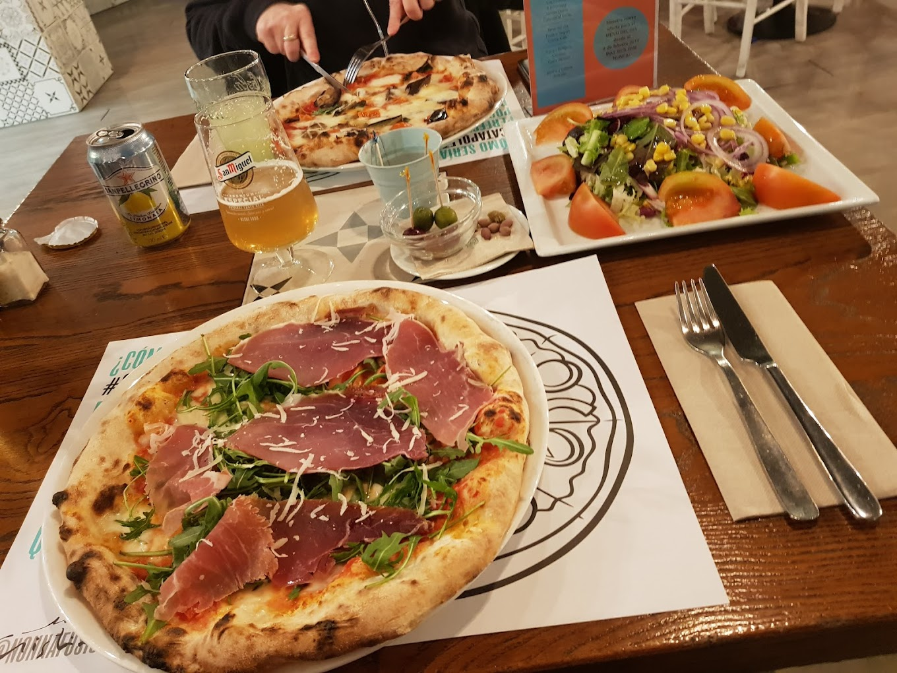

IAIA CRISTINA
L'autèntica cuina italiana, amb amor i tradició
L'autèntica cuina italiana, amb amor i tradició

A la nostra trattoria, ens apassiona oferir una experiència culinària que transporta directament al cor d’Itàlia. El nostre compromís amb la tradició i la qualitat es reflecteix en cada plat que servim, elaborat amb ingredients frescos de primera qualitat i receptes transmeses de generació en generació. La nostra especialitat són les pastes casolanes, preparades diàriament amb cura i dedicació; les pizzes cuites al nostre forn, que ofereixen una textura i sabor inconfusibles; i una acurada selecció de vins italians que mariden perfectament amb cada àpat. Vine a gaudir d’un ambient acollidor i familiar, on cada detall està pensat perquè et sentis com a casa mentre assaboreixes l’autèntica cuina italiana.
Tot comença amb la iaia Cristina, una dona senzilla però amb una mà única a la cuina. Va ser ella qui ens va ensenyar que cuinar no és només seguir una recepta, sinó posar-hi ànima i dedicació. Gràcies a les seves ensenyances, avui oferim plats que porten el gust de la tradició i el caliu de la llar. A la nostra trattoria, volem que et sentis com a casa, en un ambient càlid on cada detall està pensat perquè puguis desconnectar, compartir bons moments i deixar-te endur pels sabors autèntics d’Itàlia.


